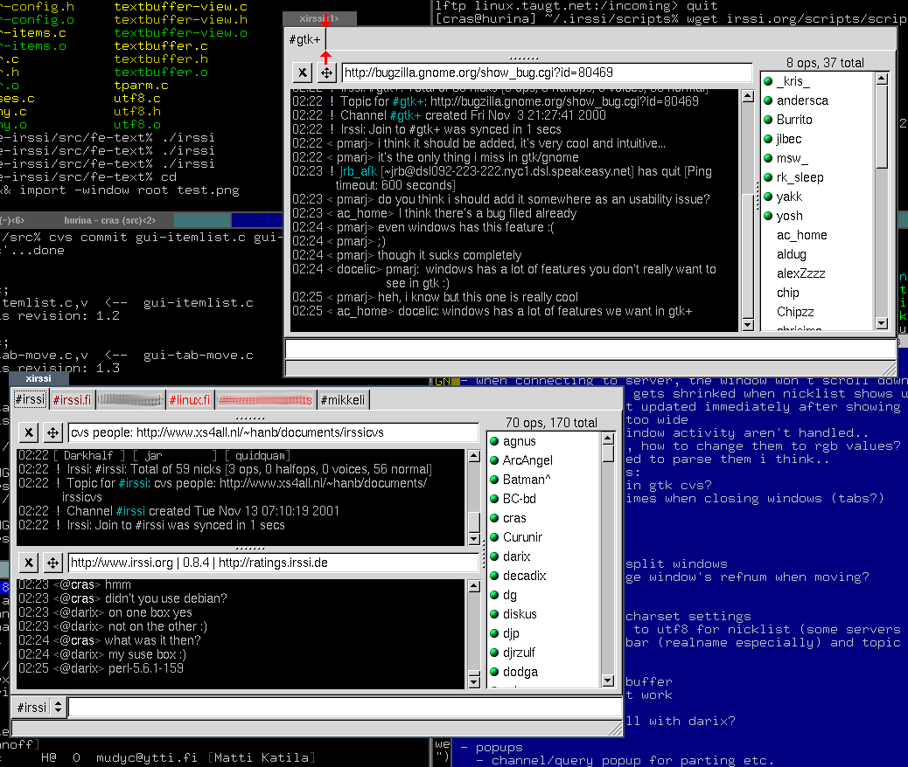

xirssi screenshots
Screenshot with latest changes. Tab labels show now all the channels that are in that window - activity color is shown separately for each split window. Active split window is shown with a red arrow. The "x ops, y total" is moved inside nicklist. Topic has grey background when it's locked, it usually is until you doubleclick it, after enter/esc it's locked again. The menubar will be optional. Tab labels are now at bottom by default.. I think they look better at top, but they're easier to access at bottom, especially if other windows are on top of the upper part of xirssi.

When mouse is over a nick in window or nicklist, it's info is displayed in statusbar. You can also right-click the nick to popup context menu. URLs work the same way.
When you have multiple channels in window (either /join -window, or split windows) you'll get an "itemlist" which shows the active channel, and you can use it to change the channel as well. If there's no active channels in window, it shows list of servers. So, it works very much like Ctrl-X.

Windows can be moved using drag and drop, very much like in Galeon. Tabs can be reordered or detached, split windows can be detached as tabs or new windows, tabs and split windows can be moved into other tabs as split windows. Only thing still missing is easily reordering split windows. Above I've started dragging #irssi tab into another window. Also notice the indenting, %| works fine with GTK2's text widget :)
So far there's no IRC-specific code, so it can be used with SILC as well. Here you can also easily see that names list is printed using monospace font. %# can be used in formats to set monospace on/off.